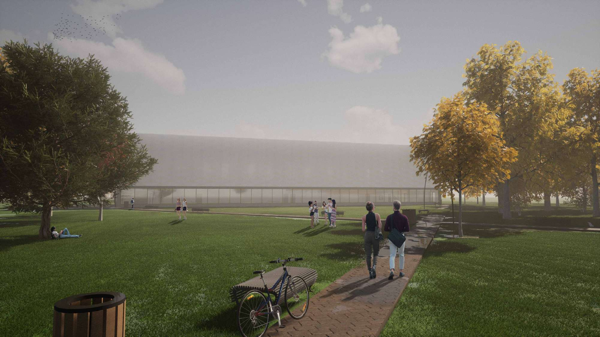
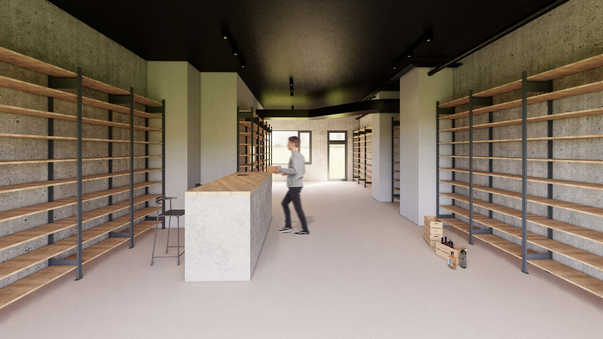

BIO
Aspiring to find a harmonious balance between the artistic and functional aspects of architecture and construction, have a strong interest in technology and always looking for ways to incorporate it into my work.
PROJECTS
OFFICE BUILDING WITH DOUBLE TRANSPARENT FACADE
The object of the office building is located in Bratislava on the Mlynské nivy street. The shape of the building was inspired by the letter L. This shape was chosen not only to enclose the area of the park, but also because this shape achieved a slight distance from the neighbouring building. The disturbance of the regular, simple shapes of the building was created by the receding 4th and 5th floors. This setback created a terraced space. Almost the entire envelope is glazed facade. There is double transparent facade on the west and south sides with a small part of the ventilated facade, the surface of which is made of anthracite aluminium Alucobond cladding.The shape divides the building into two tracts, which have separate cores. Softwares used for this project: Revit, Autocad, Twinmotion, Sketchup, Photoshop.


SPORT HALL
Sport hall is situated in suburbs of the district city Nove Mesto nad Vahom, next to primary school. The object was designed for school and public usage. Except of main sports area, there are yoga and fitness gyms in the sports hall. There is a park, on the north side of the building and further on the east side lies the football pitch. Object could be used by football players as well. The construction of sport hall is based on rainforced concrete columns, in which steel truss beams are anchored. The filling structures consist of triple glazed windows. Polycarbonate panel was chosen as a curtain facade, because of its descreet design, shading and minimalistic design. Softwares used for this project: Revit, Autocad, Twinmotion, Skechup, Photoshop.
RETAIL SPACE
Svet nápojov, or World of Drinks in English, is a small, specialized shop that specializes in a variety of spirits. The shop is compact, with limited space and a simple, minimalist design. The goal was to maximize the use of wall space for displaying bottles, while also creating a clean and uncluttered look with a color palette of simple hues. The shop features a small area for staff service and a restroom for staff as well. Softwares used for this project: Sketchup, Enscape, Photoshop.
